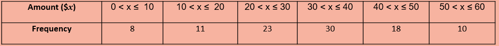

About REVEAL.JS
About D3 Charts
Example of Interactive Mathematic Lessons
Base on the frequency table below, find the lower quartile, median and upper quartile of the distribution
Calculator is on the next slide
D3 Charts and Reveal.js is capable of providing:
Recommendations for Teachers
Use D3 Charts and Reveal.js...